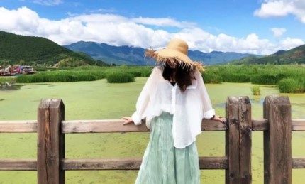

Paysages du Yunnan
Attractions recommandées
Le Yunnan est un endroit où les saisons sont comme le printemps, il était autrefois classé parmi les dix plus belles destinations touristiques du monde par CNN aux États-Unis! Cette province prestigieuse, suivez immédiatement la jeune sœur pour jeter un œil à ces 10 sites pittoresques avec quelques belles personnes! !! !!
1. Bamei-connu comme "Le dernier Xanadu"
C'est un village primitif, entouré de montagnes de tous côtés, les villageois doivent traverser la grotte en bateau pour entrer en contact avec le monde extérieur.
Le paysage idyllique ici est très beau, les rivières turquoise et les sommets imposants sont comme un paradis. De plus, vous pouvez voir les reliefs karstiques spectaculaires et ressentir les simples coutumes folkloriques.
2. Lac Lugu - connu comme le "pays fille" de l'Est
Il a de beaux lacs et montagnes, et tôt le matin, le lac est souvent entouré de nuages et de brumes, tout comme un pays de fées sur terre.

Chaque année au début du mois de juillet, il y a une grande zone de "fleurs de peuplier d'eau" en fleurs, magnifique. Vous pouvez vous rendre au pont d'observation du lac Lugu pour voir tout le lac et prendre de superbes photos.
Si vous venez avec votre amoureux, vous ne devez pas manquer le pont de mariage, c'est un endroit où les hommes et les femmes de Mosuo sortent ensemble, très romantiques.
3. Wuliang Mountain Cherry Valley - non seulement le Japon a une mer romantique de fleurs de cerisier, mais aussi au niveau national
C'est devenu une fée des fleurs dans l'objectif de nombreux dieux de la photographie. Si vous êtes également attiré par la mer romantique des cerisiers en hiver, vous devez venir tôt le matin pour voir la beauté des cerisiers entourés de nuages.
Au début de l'hiver de chaque année, les cerisiers d'hiver de la montagne Wuliang seront en pleine floraison et une mer rose de fleurs sera en vue et choquée.

4. Fleur de colza Luoping classée comme la plus belle mer de colza par China National Geographic
La fleur de colza ici est la plus ancienne de Chine. Elle fleurit autour de la Fête du Printemps. Des couches de colza sont réparties dans le ciel pour former une mer de fleurs dorées. La chose la plus importante est qu'elle est libre de visiter!
Vous pouvez vous promener dans la mer ondulée de fleurs, vous pouvez tirer de superbes superproductions sans filtres, il y a des pics de montagne continus et des routes de montagne sinueuses, qui font que les gens s'attardent.
5. La forêt de pierres, connue comme "l'essence du karst mondial"
Elle est divisée en une grande forêt de pierres et de petites zones pittoresques de forêts de pierres. Lorsque vous voyez les étranges pierres ici, vous serez surpris par le travail magique de la nature, qui est très unique et attrayant.
6.Dongchuan Red Land - la palette de Dieu
Ce n'est pas aussi spectaculaire que la terre rouge à Rio de Janeiro, au Brésil.Les villages, les cultures, etc. divisent la terre rouge en blocs colorés, comme un pot de peinture.
Si vous voulez voir le lever du soleil romantique, alors venez à Luoxiagou; si vous voulez écouter le beau son du chant dans les montagnes, alors venez à Lepuao, où les terrasses sont en couches, rouges et vertes, très spéciales.
5. Mer de Napa (prairie de Yila) - Larmes de Shangri-La
C'est un lac saisonnier, qui est un lac de plateau pendant la saison sèche; il devient la steppe de Yala pendant la saison des pluies.
C'est un beau paradis avec des montagnes, des lacs, des zones humides, des prairies, des pâturages, des montagnes, des campagnes et des villages.
Vous pouvez faire le tour du lac à cheval ou conduire la route de la mer de Napa en voiture, et chaque vue vous étonnera.
6.Fuxian Lake - le plus grand lac d'eau douce en eau profonde de Chine
C'est l'arrière-jardin du peuple du Yunnan et est plus écologique que le lac Erhai. L'eau bleue dégradée est belle et touchante. Vous pouvez vous allonger sur la plage sur le rivage pour profiter du soleil. Les photos sont toutes en vacances au vent.
Le soir, vous pouvez vous rendre dans la ville du ciel étoilé avec votre amoureux pour regarder la vue de nuit, regarder le coucher du soleil se coucher, puis vers la mer étoilée du ciel. Un si beau paysage fait oublier les ennuis aux gens.
7. Baishuitai-version chinoise de Pamukkale
Son paysage est comparable à celui de Pamukkale en Turquie, et a la réputation de "Champ Immortel". Les couches d'eau blanche sont en cascade, étincelantes, tout comme la barbe à papa se déploie
8. Meili Snow Mountain nommée l'une des "dix plus célèbres montagnes de Chine" par China National Geographic
Elle est connue sous le nom de Montagne Sainte, et il est dit qu'une visite à cet endroit peut laver le péché. Lorsque vous venez ici, vous pouvez voir les majestueuses montagnes aux sommets enneigés, les sommets qui collent aux nuages, et le peuple tibétain simple, et ressentir le riche style tibétain.
Si vous avez la chance, vous pouvez voir les merveilles de Rizhao Jinshan, qui est le rêve d'innombrables amis ânes. Les imposants sommets enneigés sont recouverts d'une couche de lumière dorée, l'image entière est un régal visuel, super choc!
9.Dashanbao - le plus grand habitat de la grue à cou noir dans le monde
Il conserve des forêts primitives, est la grue nationale à col noir protégée de premier niveau Eden en hiver, et est une belle station balnéaire qui combine prairies, mer de nuages et zones humides.
Au printemps, vous pouvez admirer les gorges de la montagne Jigong avec quelques kilomètres de dénivelé; en été, vous pouvez monter la montagne et marcher sur la prairie verte; en hiver, vous pouvez vous promener dans la mer de nuages et profiter des superbes levers et couchers de soleil. Chaque saison est différente et belle.
10, Bingzhongluo-un paradis de cohabitation humaine et divine
C'est une terre vierge non développée et le paysage est très charmant! Vous pouvez profiter des fleurs de pêchers au printemps, des magnifiques rivières et vallées en été, des paysages ruraux en automne et de la neige blanche en hiver.
Voici les villages de Kantou, connu sous le nom d'île Taohua, le village de Wuli, avec des paysages comparables à celui de la Suisse;